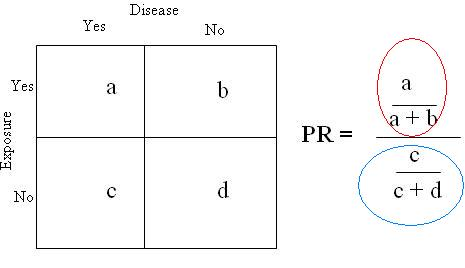

Prevalence Ratio in Cross-Sectional Study
Lead Author(s): Jeff Martin, MD
Definition of Prevalence Ratio
The ratio of the proportion of the persons with disease over the proportion with the exposure.
Prevalence of Disease in Exposed and Unexposed
In the 2x2 table below the proportion of the persons with disease is calculated in the group with the exposure and separately in the group without the exposure.

- a/a+b (circled in red) is the prevalence of disease among the exposed persons
- c/c+d (circled in blue) is the prevalence of disease among the non-exposed.
Since this is a cross-sectional study, both are prevalence.
To compare these two prevalences, we can form a ratio with one over the other to get a prevalence ratio of disease in the exposed and unexposed.
Meaning of Prevalence Ratio
- If the prevalence is the same, the ratio will equal 1.0.
- If disease prevalence is higher in those with the exposure (placed on top in the ratio), the ratio will be greater than 1.0.
- If the prevalence is lower in those with the exposure, the ratio will be l ess than 1.0.
Strength of Association
How much greater or less than 1.0 is a measure of the strength of the association between the exposure and the disease.
This kind of measure of association is known as a ratio measure.
Ratio Based on Probabilities
In the above table:
- So a/a+b and c/c+d = probabilities of disease
PR is ratio of two probabilities
The proportion with prevalent disease among those exposed is the probability of prevalent disease among the exposed, and similarly for the unexposed. We are making this point to distinguish a ratio based on probabilities from a ratio based on odds.
Study Reporting Prevalence Ratios
An example of the prevalence ratio can be found in Ross:
"Overall, HSV2 prevalences at follow-up were 11.9% in male and 21.1% in female participants, with adjusted prevalence ratios of:
- 0.92 (CI 0.69, 1.22) and
- 1.05 (CI 0.83, 1.32), respectively."
This is a publication from a community-randomized trial in Tanzania.
The main biological outcomes were the incidence of HIV infections during the trial and the prevalence of HSV2 infection at the end of the trial in the:
- intervention and
- control groups
- (20 communities were randomized, 10 to each group).
HSV2 was measured only once, cross-sectionally, at the end of the trial and
- hence the ratio of the prevalence in the intervention and control groups is reported correctly as a prevalence ratio.
Reference
Ross, D. A., Changalucha, J., Obasi, A. I., Todd, J., Plummer, M. L., Cleophas-Mazige, B., et al. (2007). Biological and behavioural impact of an adolescent sexual health intervention in Tanzania: a community-randomized trial. Aids, 21(14), 1943-1955.